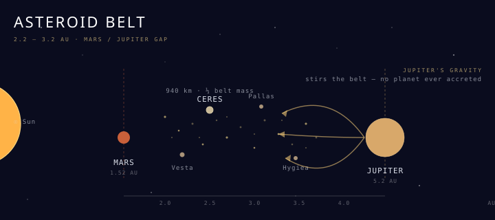

The Asteroid Belt
A planet that almost was — the rocky remnants between Mars and Jupiter that Jupiter's gravity wouldn't let coalesce.

101 · zoom in
When Bode's Law predicted a body at 2.8 AU between Mars and Jupiter in the late 18th century, astronomers went hunting. On New Year's Day 1801, Giuseppe Piazzi at the Palermo observatory found something. He called it Ceres after the patron goddess of Sicily, and at first the Royal Society classified it as the missing planet. Within four years a second body — Pallas — turned up in the same neighborhood. Then Juno (1804) and Vesta (1807). The realization dawned slowly: this wasn't a planet, it was a swarm.
Today catalogues list more than 1.3 million asteroids larger than 1 km, and dynamical models put the population of 100-metre-class bodies in the hundreds of millions. The total mass is a surprise: only about 4% of the Moon, and roughly a third of that sits in Ceres alone. The belt is mostly empty — the average separation between members is in the millions of kilometres. The dense rock-field of cinema is a Hollywood invention.
Why no planet ever formed here is itself the story. Jupiter sits just outside the belt at 5.2 AU, and during the solar system's formation Jupiter's gravity stirred the inner-belt material too vigorously for accretion to win against fragmentation. Whatever was trying to grow into a planet got smashed back into fragments faster than it could re-accrete. The asteroid belt is the unfinished planet, frozen at an earlier stage of solar-system evolution.
The belt has internal structure. Spectroscopy divides it into three rough zones: the inner belt (2.1–2.5 AU) dominated by stony S-type bodies; the middle belt (2.5–3.2 AU) where carbonaceous C-types take over (Ceres + Hygiea live here); and the outer belt blending into the Trojan asteroids that share Jupiter's orbit at the L4 and L5 Lagrange points. Different parent populations, different formation temperatures, different histories — preserved in the same belt because Jupiter's resonances corralled them.
Major missions have visited only a handful of belt members directly. NASA's Galileo flyby of Gaspra (1991) was the first close-up image of any asteroid. Dawn (2011 + 2015) orbited Vesta then Ceres — the only spacecraft to ever orbit two extra-terrestrial bodies. Ceres turned out to be a water-ice + brine world: bright sodium-carbonate deposits at Occator Crater are residue from cryovolcanic eruptions of subsurface salty water, and Dawn detected a thin transient atmosphere of water vapor. Vesta is the other extreme — a differentiated rocky proto-planet whose southern hemisphere is one giant 500-km-wide impact basin (Rheasilvia), and pieces blasted out of that impact are the HED meteorite class on Earth.
Most meteorites that fall on Earth come from the asteroid belt. Yarkovsky drift — uneven thermal re-radiation slowly nudging a body's orbit over millennia — pushes asteroids out of resonance gaps inward to Earth-crossing orbits. Sample-return missions are starting to close the loop directly: JAXA's Hayabusa2 returned 5.4 grams of asteroid Ryugu in 2020, and NASA's OSIRIS-REx returned samples from Bennu in 2023. Both are near-Earth asteroids derived from belt parent bodies. NASA's Lucy mission (launched 2021) is the long game: visiting eight Trojan asteroids plus belt member Dinkinesh, the first multi-Trojan tour, exploring fragments of the outer-belt population that share Jupiter's orbit but stay 60° ahead or behind.